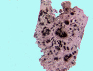

|
|

|
Welcome to the A. C. Moore Herbarium!

|
Research
Molecular Biology
Researchers at USC's Department of Biological Sciences have investigated the anatomy of stem tumors of transgenic tobacco plants. (See Anandalakshmi R, et al 2000. A calmodulin-related protein that suppresses posttranscriptional gene slicing in plants, Science 290: 142-144.) Two different species of tobacco, Nicotiana tabacum L. and N. benthamiana Domin, were used in these experiments. In tumors of both species, the quantity of vascular tissue is far less than in normal stem bases, and primary and secondary xylem elements cannot be distinguished. These studies shed light on the effect of polarity on the development of tumors, and the characteristics, both anatomical and developmental, of plant tumors in general. Voucher specimens of all plant materials used in this these experiments are housed in the herbarium.
|
|  |
| Top left: N. benthamiana with basal stem tumor. Above: Transection of tumor illustrates altered distribution and orientation of vascular elements. Left: Normal stem.
Photos by John M. Herr |
|
Voucher specimen of transgenic Nicotiana benthamiana (USCH #86066). Fragment material dried without heat or pressure to facilitate DNA extraction.
|
Plant Systematics
|
Stachys (the "hedge-nettles") is a genus in the mint family (Lamiaceae) containing nearly 250 species, and thus is one of the larger genera in the family. It is nearly cosmopolitan in natural distribution, and North America is rich in species diversity. Within the United States, two large areas are of particular interest in the taxonomy of hedge-nettles, the Appalachians, and California. Otherwise, every state of the Union has naturally occurring populations of at least two species of Stachys. Most of the hedge-nettles are perennials, commonly featuring rhizomes, and sometimes tubers. Certain species are important as agricultural weeds. Our research has indicated zones of intergradation between otherwise easily separated species. Nomenclatural confusion has been the result (as with many other groups); we are attempting to unravel the morphological limits of these species. |
S. floridana. Native to Florida, it is now a common weed of the southeastern US. Its crisp, white tubers make it difficult to eradicate once established. (On the other hand, the tubers are edible.) |
| Stachys chamissonis, from California. Of all the hedge-nettles in North America, this has the largest flowers, with corollas to 4cm (1.5 inches) long. Hummingbirds are commonly seen visiting the flowers. This specimen is on loan to USCH from DAO (Vascular Plant Herbarium, Agriculture-Canada, Ottawa). |
|
Floristics
|
Recent research has investigated the rare and threatened species occurring at the Congaree Swamp National Monument in Richland County, about 15 miles from the University. Although the swamp is highly diverse in terms of woody species, it is relatively species poor in herbaceous flora, although it features considerable diversity of species in the genus Carex.
|
Congaree Swamp NM supports one of the world's largest populations of Macbridea caroliniana (bog mint), a rare plant.
|
|
|